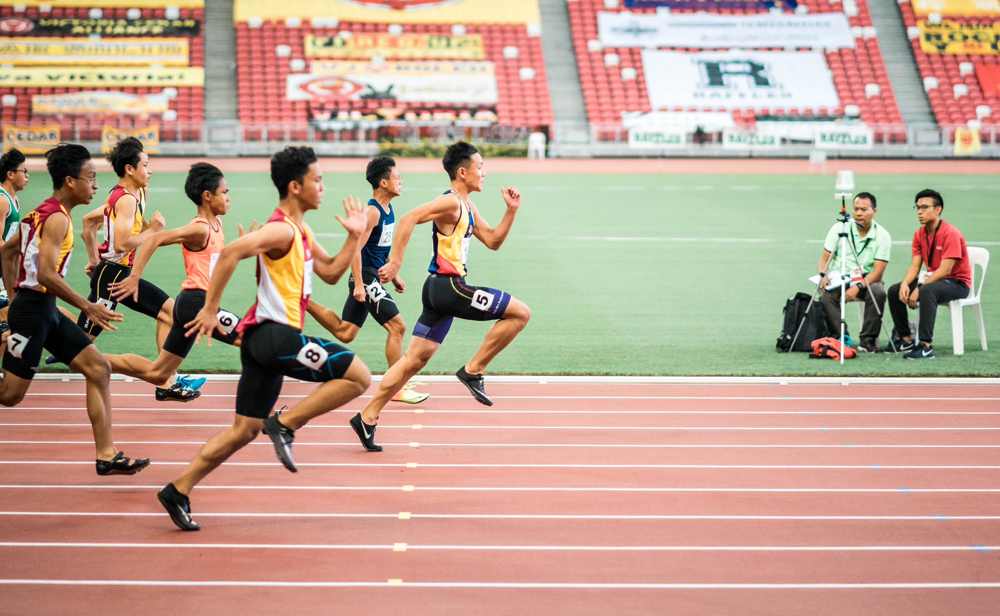
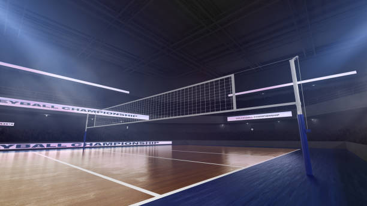

<!DOCTYPE html>
<html lang="en">
<head>
    <meta charset="UTF-8">
    <meta http-equiv="X-UA-Compatible" content="IE=edge">
    <meta name="viewport" content="width=device-width, initial-scale=1.0">
    <title>Hasan Waulat</title>
    <link rel="stylesheet" href="./website.css">
    <script src="./website.js"></script>
  </body>
</html>
</head>
<body>
    <header>
        <div class="logo">
            
            <h1 class="logo-title">Hann</h1>
        </div>
        <nav>
            <ul>
                <li><a href="#portofolio">Portofolio</a></li>
                <li><a href="#hobi">Hobi</a></li>
                <li><a href="https://wa.me/+6285254308418">Kontak</a></li>
            </ul>
        </nav>
        <button class="btn" onclick="redirInstagram()">Follow Saya</button>
    </header>
    <section class="jumbotron">
        <!--  -->
        <h1 class="display">UI/UX & Research Design</h1>
        <p class="p-one">I'am a UI/UX & Research Design with a mission to design <br> memorable products that make life easier
        </p>
    </section>
    <!-- <div class="social">
        <ul>
            <li><a href=""></a></li>
            <li><a href=""></a></li>
        </ul>
    </div> -->
    <div class="container">
        <p class="flex">Saya adalah individu yang selalu
            berusaha, memiliki antusias dan
            motivasi tingi. saya dapat
            mengoperasikan Microsoft Office
            dengan baik dan bisa juga dalam
            operasikan software untuk pembuatan
            website diantaranya adalah visual
            studio code dan sublime. saya
            memanfaatkan kesempatanuntuk
            bealajar dan terus mengembangkan
            dan mengasah kemampuan saya untuk
            bisa bekerja dan membuat sistem yang
            dapat membantu banyak orang, saya
            senang dengan belajar hal baru.</p>
        <p class="flex">
            PENGALAMAN :
            <br>
            1. Magang di Bidang Kepegawaian Universitas Muhammadiyah Malang selama 4 Bulan
            <br>
            2. Mengikuti program Kampus Merdeka di Binara Academy Course UI/UX Research & 
            <br>Design selama 5 bulan
        </p>
    </div>
    <main>
        <div class="content">
            <div id="portofolio">
                <article id="Home" class="box">
                    <p class="card-title">
<pre class="satu">
Redesign Aplikasi MyUMM 
for Student
</pre>
                    </p>
                    <p class="card-description">
<pre class="dua">
    My UMM for student aplikasi untuk informasi Mahasiswa 
Universitas Muhammadiyah Malang, untuk mengakses aplikasi 
ini diperlukan Nomor Induk Mahasiswa (NIM) dan Personal 
Identification Code (PIC)
</pre>
                       
                        </p>
                    <a href="https://www.behance.net/gallery/156266533/Redesign-Aplikasi-myUMM-for-Student"><button class="bn30">Details</button></a>
                    <p></img></p>
                </article>
                <article id="Home" class="box">
                    <p class="card-title">
<pre class="satu">
Manajemen Proyek Perangkat
Lunak
</pre>
                        </p class="card-description">
<pre class="dua">
    Manajemen Proyek Perangkat Lunak aplikasi sistem
pakar diagnosa penyakit ayam PT.Al-Uswah. Proyek ini
bertujuan untuk membantu para peternak ayam pemula
sampai keatas disebuah perusahaan software PT.Al-Uswah
</pre>
                    </p>
                    <a href="/"><button class="bn30">Details</button></a>
                    <p></p>
                </article>
                <article id="Home" class="box">
                    <p class="card-title">
<pre class="satu">
Agriculture "Ruang Tani"
</pre>
                        </p class="card-description">
<pre class="dua">
    Pengguna kesulitan dalam menjalankan pekerjaan
    bertaninya, karena : sulit mendapatkan bahan
    pasokan pertanian yang mudah dan terjangkau,
    mengalami kerugian karena permainan harga
    dari tenkulak/penebas, serta pengetahuan yang
    masih kurang tentang pengelolaan pertanian.
</pre>
                    </p>
                    <a href="https://www.linkedin.com/feed/update/urn:li:activity:7017845249502834688/"><button class="bn30">Details</button></a>
                    <p></p>
            </div>
        </div>
        <aside>
            <article class="box1">
                <figure>
                    <p>Hasan Waulat</p>
                     
                    <figcaption>Biodata Saya</figcaption>
                </figure>
                <section>
                    <table>
                        <tr>
                            <td>Nama Panggilan</td>
                            <td>Hann</td>
                        </tr>
                        <tr>
                            <td>Umur</td>
                            <td>19 Tahun</td>
                        </tr>
                        <tr>
                            <td>Asal</td>
                            <td>Ambon, Desa Hitu</td>
                        </tr>
                        <tr>
                            <td>Hoby</td>
                            <td>Sepakbola, Volly Ball</td>
                        </tr>
                        <tr>
                            <td>email</td>
                            <td>waulat03webmail @webmail.umm.ac.id</td>
                        </tr>
                    </table>
                </section>
            </article>
            <div class="port" id="hobi">
                <div class="card-port">
                    <h1>HOBY</h1>
                    <div class="card-item">
                        <h2>Atletic</h2>
                        
                        <div class="card-title">
                            <ul>
                                <li> - Juara 1 Estafet 4x400 Putra 2020</li>
                                <li> - Juara 3 Atletic Virtual Run 3K</li>
                            </ul>
                        </div>
                    </div>
                    <div class="card-item">
                        <h2>VollyBall</h2>
                        
                        <div class="card-title">
                             <p>Terus berlatih sampai dapat hasilnya</p>
                        </div>
                    </div>
                    <div class="card-item">
                        <h2>Table Tenis</h2>
                        
                        <div class="card-title">
                            <ul>
                                <li> - Juara 1 solo & ganda campuran</li>
                            </ul>
                        </div>
                    </div>
                    <div class="card-item">
                        <h2>Organisasi</h2>
                        <div class="card-title">
                            <ul>
                                <li> - Ketua OSIS (2018-2019)</li>
                                <li> - Panitia Rector Cup UKM Sepak Bola (2020)</li>
                            </ul>
                        </div>
                    </div>
                    <div class="card-item">
                        <h2>Pendidikan</h2>
                        <div class="card-title">
                            <ul>
                                <li> - SMKN 1 Leihitu | TKJ (2016-2019)</li>
                                <li> - S1 UMM | Informatika (2019-2023)</li>
                            </ul>
                        </div>
                    </div>
                </div>
        </div>
        </aside>
        
    </main>
    <footer>
        <a href="https://www.linkedin.com/in/hasan-waulat/"></a>
        <p>&copy Right By Hasan Waulat</p>
    </footer>
</body>
</html>